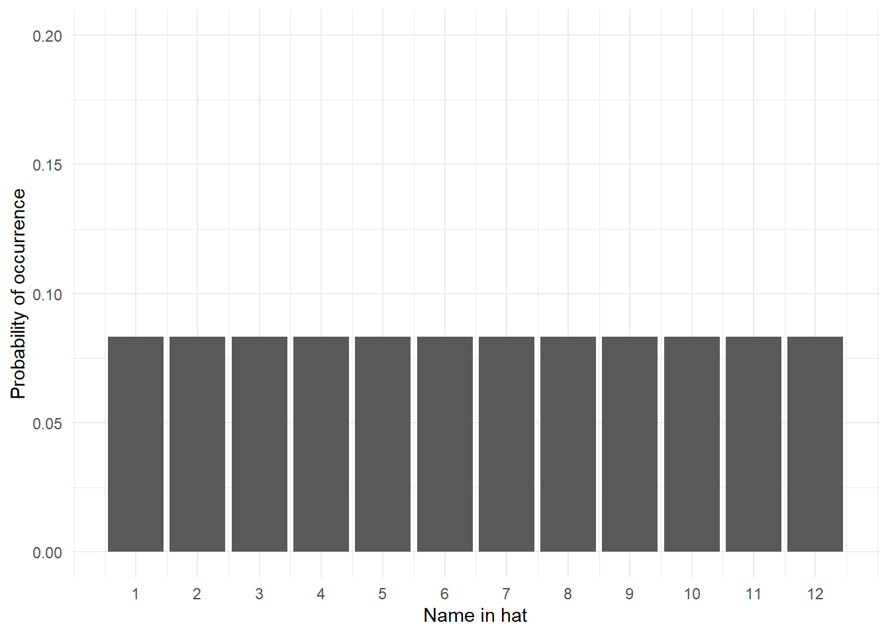
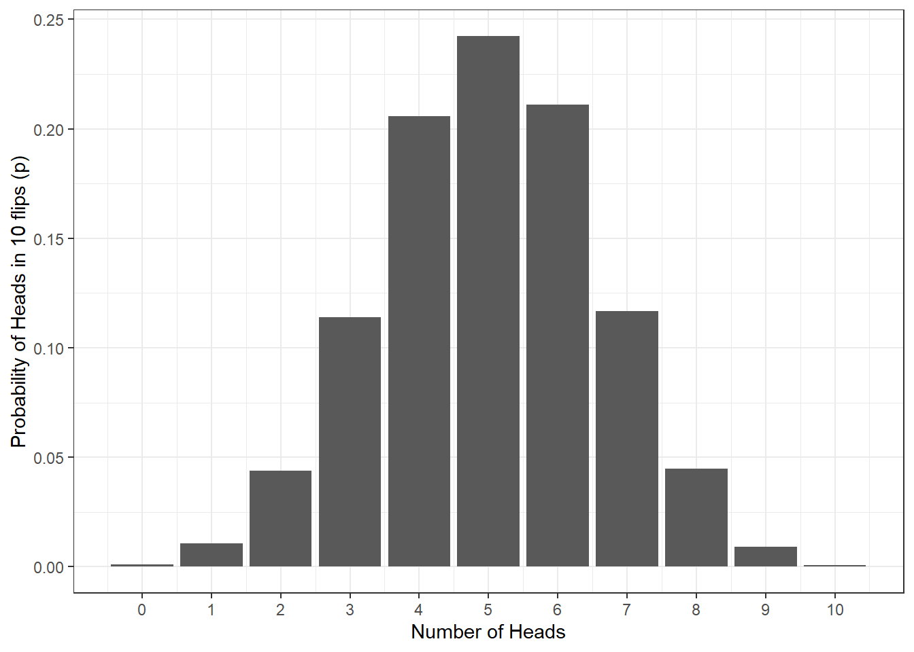
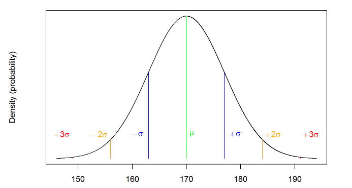
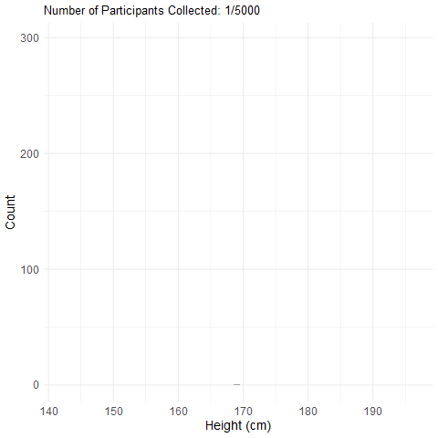

[1] 0.0833333313 Intro to Probability
In the Psych 1A Research Methods lectures, we talked a lot about p-values and statistical significance. P-values are the probability that you would get the observed results if the null hypothesis was true (i.e., if there really was no effect of your experiment). In psychology, the standard cut-off for statistical significance is p < .05, that is, if the probability that we would observe our results under the null hypothesis is less than 5%, we conclude that our experiment has had an effect and there is a difference between our groups. In this chapter, we’re going to go into a bit more detail about exactly what we mean by probability.
13.1 Activity 1: Prep
- Read Statistical thinking (Noba Project)
- Watch Normal Distribution - Explained Simply (10 mins)
- Watch Probability explained (8 mins)
- Watch Binomial distribution (12 minutes)
13.2 What is probability?
Probability (p) is the extent to which an event is likely to occur and is represented by a number between 0 and 1. For example, the probability of flipping a coin and it landing on ‘heads’ would be estimated at p = .5, i.e., there is a 50% chance of getting a head when you flip a coin. Calculating the probability of any discrete event occurring can be formulated as:
\[p = \frac{number \ of \ ways \ the \ event \ could \ arise}{number \ of \ possible \ outcomes}\] For example, what is the probability of randomly drawing your name out of a hat of 12 names where one name is definitely yours?
The probability is .08, or to put it another way, there is an 8.3% chance that you would pull your name out of the hat.
13.3 Types of data
How you tackle probability depends on the type of data/variables you are working with (i.e. discrete or continuous). This is also referred to as Level of Measurements.
Discrete data can only take integer values (whole numbers). For example, the number of participants in an experiment would be discrete - we can’t have half a participant! Discrete variables can also be further broken down into nominal and ordinal variables.
Ordinal data is a set of ordered categories; you know which is the top/best and which is the worst/lowest, but not the difference between categories. For example, you could ask participants to rate the attractiveness of different faces based on a 5-item Likert scale (very unattractive, unattractive, neutral, attractive, very attractive). You know that very attractive is better than attractive but we can’t say for certain that the difference between neutral and attractive is the same size as the distance between very unattractive and unattractive.
Nominal data is also based on a set of categories but the ordering doesn’t matter (e.g. left or right handed). Nominal is sometimes simply referred to as categorical data.
Continuous data on the other hand can take any value. For example, we can measure age on a continuous scale (e.g. we can have an age of 26.55 years), other examples include reaction time or the distance you travel to university every day. Continuous data can be broken down into interval or ratio data.
Interval data is data which comes in the form of a numerical value where the difference between points is standardised and meaningful. For example temperature, the difference in temperature between 10-20 degrees is the same as the difference in temperature between 20-30 degrees.
Ratio data is very like interval but has a true zero point. With our interval temperature example above, we have been experiencing negative temperatures (-1,-2 degrees) in Glasgow but with ratio data you don’t see negative values such as these i.e. you can’t be -10 cm tall.
13.4 Activity 2: Types of data
What types of data are the below measurements?
- Time taken to run a marathon (in seconds):
- Finishing position in marathon (e.g. 1st, 2nd, 3rd):
- Which Sesame Street character a runner was dressed as:
- Temperature of a runner dressed in a cookie monster outfit (in degrees Celsius):
13.5 Probability distributions
Probability distribution is a term from mathematics. Suppose there are many events with random outcomes (e.g., flipping a coin). A probability distribution is the theoretical counterpart to the observed frequency distribution. A frequency distribution simply shows how many times a certain event actually occurred. A probability distribution says how many times it should have occurred.
Mathematicians have discovered a number of different probability distributions, that is, we know that different types of data will tend to naturally fall into a known distribution and we can use them to help us calculate probability.
13.6 The uniform distribution
The uniform distribution is when each possible outcome has an equal chance of occurring. Let’s take the example from above, pulling your name out of a hat of 12 names. Each name has an equal chance of being drawn (p = .08). If we visualised this distribution, it would look like this - each outcome has the same chance of occurring:

13.7 The binomial distribution
The binomial (bi = two, nominal = categories) distribution is a frequency distribution which calculates probabilities of success for situations where there are two possible outcomes e.g., flipping a coin. A binomial distribution models the probability of any number of successes being observed, given the probability of a success and the number of observations. Binomial distributions represent discrete data.
Describing the probability of single events, such as a single coin flip or rolling a six is easy, but more often than not we are interested in the probability of a collection of events, such as the number of heads out of 10 coin flips. To work this out, we can use the binomial distribution and functions in R.
Let’s say we flip a coin 10 times. Assuming the coin is fair (probability of heads = .5), how many heads should we expect to get? The below figure shows the results of a simulation for 10,000 coin flips (if you’d like to do this simulation yourself in R, you can see the code by clicking “Solution”). What this means is that we can use what we know about our data and the binomial distribution to work out the probability of different outcomes (e.g., what’s the probability of getting at least 3 heads if you flip a coin 10 times?) and this is what we’ll do in the next chapter

heads10000 <- replicate(n = 10000, expr = sample(0:1, 10, TRUE) %>% sum())
data10000 <- tibble(heads = heads10000) %>% # convert to a tibble
group_by(heads) %>% # group by number of possibilities
summarise(n = n(), # count occurances of each possibility,
p=n/10000) # & calculate probability (p) of each
ggplot(data10000, aes(x = heads,y = p)) +
geom_bar(stat = "identity") +
labs(x = "Number of Heads", y = "Probability of Heads in 10 flips (p)") +
theme_bw() +
scale_x_continuous(breaks = c(0,1,2,3,4,5,6,7,8,9,10))13.8 The normal distribution
The final probability distribution you need to know about is the normal distribution. The normal distribution, reflects the probability of any value occurring for a continuous variable. Examples of continuous variables include height or age, where a single person can score anywhere along a continuum. For example, a person could be 21.5 years old and 176cm tall.
As the normal distribution models the probability of a continuous variable, we plot the probability using a density plot. A normal distribution looks like this:

Normal distributions are symmetrical, meaning there is an equal probability of observations occurring above and below the mean. This means that, if the mean in figure 1 is 170, we could expect the number of people who have a height of 160 to equal the number of people who have a height of 180. This also means that the mean, median, and mode are all expected to be equal in a normal distribution.
In the same way that we could with the coin flips, we can then use what we know about our data and the normal distribution to estimate the probability of certain outcomes (e.g., what’s the probability that someone would be taller than 190cm?) and we’ll do this in the lab.
As with any probabilities, real-world data will come close to the normal distribution, but will (almost certainly) never match it exactly. As we collect more observations from normally-distributed data, our data will get increasingly closer to a normal distribution. As an example, here’s a simulation of an experiment in which we collect heights from 5000 participants. As you can see, as we add more observations, our data starts to look more and more like the normal distribution in the previous figure.

13.9 Activity 3: Normal distribution
Complete the sentences so that they are correct.
- In a normal distribution, the mean, median, and mode .
- In a normal distribution, the further away from the mean an observation is .
- Whereas the binomial distribution is based on situations in which there are two possible outcomes, the normal distribution is based on situations in which the data .
13.10 Activity 4: Distribution test
Which distribution is likely to be associated with the following?
- Scores on an IQ test
- Whether a country has won or lost the Eurovision song contest
- Picking a spade card out of a normal pack of playing cards
In the next chapter we’re going to continue looking at distributions and probability. Whilst you won’t start conducting statistical tests until level 2, by the end of the next chapter you should be able to understand the core principles of probability and how we can use what we know about distributions to calculate whether a particular outcome is likely.